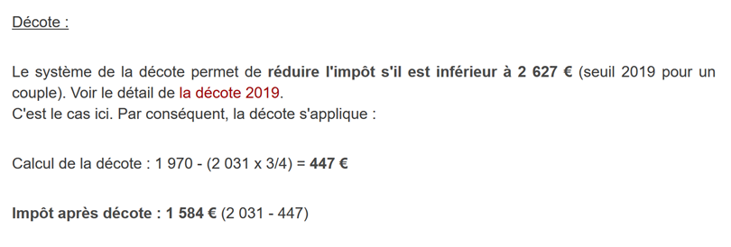
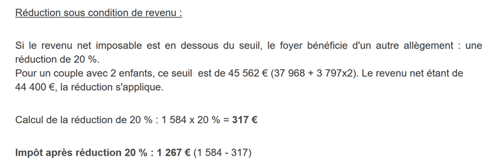

8. Exercice d'application – version 1
8.1. Le problème
Le tableau ci-dessus permet de calculer l’impôt dans le cas simplifié d'un contribuable n'ayant que son seul salaire à déclarer. Comme l’indique la note (1), l’impôt ainsi calculé est l’impôt avant trois mécanismes :
- le plafonnement du quotient familial qui intervient pour les hauts revenus ;
- la décote et la réduction d’impôts qui interviennent pour les faibles revenus ;
Ainsi le calcul de l’impôt comprend les étapes suivantes [http://impotsurlerevenu.org/comprendre-le-calcul-de-l-impot/1217-calcul-de-l-impot-2019.php] :

On se propose d'écrire un programme permettant de calculer l'impôt d'un contribuable dans le cas simplifié d'un contribuable n'ayant que son seul salaire à déclarer :
8.1.1. Calcul de l’impôt brut
L’impôt brut peut être calculé de la façon suivante :
On calcule d’abord le nombre de parts du contribuable :
- chaque parent amène 1 part ;
- les deux premiers enfants amènent chacun 1/2 part ;
- les enfants suivants amènent une part chacun :
Le nombre de parts est donc :
- nbParts=1+nbEnfants*0,5+(nbEnfants-2)*0,5 si le salarié n’est pas marié ;
- nbParts=2+nbEnfants*0,5+(nbEnfants-2)*0,5 s'il est marié ;
- où nbEnfants est son nombre d'enfants ;
- on calcule le revenu imposable R=0.9*S où S est le salaire annuel ;
- on calcule le quotient familial QF=R/nbParts ;
- on calcule l’impôt brut I d'après les données suivantes (2019) :
9964 | 0 | 0 |
27519 | 0.14 | 1394.96 |
73779 | 0.3 | 5798 |
156244 | 0.4 | 13913.69 |
0 | 0.45 | 20163.45 |
Chaque ligne a 3 champs : champ1, champ2, champ3. Pour calculer l'impôt I, on recherche la première ligne où QF<=champ1 et on prend les valeurs de cette ligne. Par exemple, pour un salarié marié avec deux enfants et un salaire annuel S de 50000 euros :
Revenu imposable : R=0,9*S=45000
Nombre de parts : nbParts=2+2*0,5=3
Quotient familial : QF=45000/3=15000
La 1re ligne où QF<=champ1 est la suivante :
L'impôt I est alors égal à 0.14*R – 1394,96*nbParts=[0,14*45000-1394,96*3]=2115. L’impôt est arrondi à l’euro inférieur.
Si la relation QF<=champ1 dès la 1re ligne, alors l’impôt est nul.
Si QF est tel que la relation QF<=champ1 n'est jamais vérifiée, alors ce sont les coefficients de la dernière ligne qui sont utilisés. Ici :
ce qui donne l'impôt brut I=0.45*R – 20163,45*nbParts.
8.1.2. Plafonnement du quotient familial
Pour savoir si le plafonnement du quotient familial QF s’applique, on refait le calcul de l’impôt brut sans les enfants. Toujours pour le salarié marié avec deux enfants et un salaire annuel S de 50000 euros :
Revenu imposable : R=0,9*S=45000
Nombre de parts : nbParts=2 (on ne compte plus les enfants)
Quotient familial : QF=45000/2=22500
La 1re ligne où QF<=champ1 est la suivante :
L'impôt I est alors égal à 0.14*R – 1394,96*nbParts=[0,14*45000-1394,96*2]=3510.
Gain maximal lié aux enfants : 1551 * 2 = 3102 euros
Impôt minimal : 3510-3102 = 408 euros
L’impôt brut avec 3 parts déjà calculé 2115 euros est supérieur à l’impôt minimal 408 euros, donc le plafonnement familial ne s’applique pas ici.
De façon générale, l’impôt brut est sup(impôt1, impôt2) où :
- [impôt1] : est l’impôt brut calculé avec les enfants ;
- [impôt2] : est l’impôt brut calculé sans les enfants et diminué du gain maximal (ici 1551 euros par demi-part) lié aux enfants ;
8.1.3. Calcul de la décote

Toujours pour le salarié marié avec deux enfants et un salaire annuel S de 50000 euros :
L’impôt brut (2115) issu de l’étape précédente est inférieur à 2627 euros pour un couple (1595 euros pour un célibataire) : la décôte s’applique donc. Elle est obtenue avec le calcul suivant :
décôte= seuil (couple=1970/célibataire=1196)-0,75* Impôt brut
décôte=1970-0,75*2115=383,75 arrondi à 384 euros.
Nouvel Impôt brut= 2115-384= 1731 euros
8.1.4. Calcul de la réduction d’impôts

Au-dessous d’un certain seuil, une réduction de 20 % est faite sur l’impôt brut issu des calculs précédents. En 2019, les seuils sont les suivants :
- célibataire : 21037 euros ;
- couple : 42074 euros ; ( le chiffre 37968 utilisé dans l’exemple ci-dessus semble erroné) ;
Ce seuil est augmenté de la valeur : 3797 * (nombre de demi-parts amenées par les enfants).
Toujours pour le salarié marié avec deux enfants et un salaire annuel S de 50000 euros :
- son revenu imposable (45000 euros) est inférieur au seuil (42074+2*3797)=49668 euros ;
- il a donc droit à une réduction de 20 % de son impôt : 1731 * 0,2= 346,2 euros arrondi à 347 euros ;
- l’impôt brut du contribuable devient : 1731-347= 1384 euros ;
8.1.5. Calcul de l’impôt net
Notre calcul s’arrêtera là : l’impôt net à payer sera de 1384 euros. Dans la réalité, le contribuable peut bénéficier d’autres réductions notamment pour des dons à des organismes d’intérêt public ou général.
8.1.6. Cas des hauts revenus
Notre exemple précédent correspond à la majorité des cas de salariés. Cependant le calcul de l’impôt est différent dans le cas des hauts revenus.
8.1.6.1. Plafonnement de la réduction de 10 % sur les revenus annuels
Dans la plupart des cas, le revenu imposable est obtenu par la formule : R=0,9*S où S est le salaire annuel. On appelle cela la réduction des 10 %. Cette réduction est plafonnée. En 2019 :
- elle ne peut être supérieure à 12502 euros ;
- elle ne peut être inférieure à 437 euros ;
Prenons le cas d’un salarié non marié sans enfants et un salaire annuel de 200000 euros :
- la réduction de 10 % est de 20000 euros > 12502 euros. Elle est donc ramenée à 12502 euros ;
8.1.6.2. Plafonnement du quotient familial
Prenon un cas où le plafonnement familial présenté au paragraphe |Plafonnement du quotient familial|, intervient. Prenons le cas d’un couple avec trois enfants et des revenus annuels de 100000 euros. Reprenons les étapes du calcul :
- l’abattement de 10 % est de 10000 euros < 12502 euros. Le revenu imposable R est donc 100000-10000=90000 euros ;
- le couple a nbParts=2+0,5*2+1=4 parts ;
- son quotient familial est donc QF= R/nbParts=90000/4=22500 euros ;
- son impôt brut I1 avec enfants est I1=0,14*90000-1394,96*4= 7020 euros ;
- son impôt brut I2 sans enfants :
- QF=90000/2=45000 euros ;
- I2=0,3*90000-5798*2=15404 euros ;
- la règle du plafonnement du quotient familial dit que le gain amené par les enfants ne peut dépasser (1551*4 demi-parts)=6204 euros. Or ici, il est I2-I1=15404-7020= 8384 euros, donc supérieur à 6204 euros ;
- l’impôt brut est donc recalculé comme I3=I2-6204=15404-6204= 9200 euros ;
Ce couple n’aura ni décote, ni réduction et son impôt final sera de 9200 euros.
8.1.7. Chiffres officiels
Le calcul de l’impôt est complexe. Tout au long du document, les tests seront faits avec les exemples suivants. Les résultats sont ceux du simulateur de l’administration fiscale |https://www3.impots.gouv.fr/simulateur/calcul_impot/2019/simplifie/index.htm| :
Contribuable | Résultats officiels | Résultats de l’algorithme du document |
Couple avec 2 enfants et des revenus annuels de 55555 euros | Impôt=2815 euros Taux d’imposition=14 % | Impôt=2814 euros Taux d’imposition=14 % |
Couple avec 2 enfants et des revenus annuels de 50000 euros | Impôt=1385 euros Décote=720 euros Réduction=0 euros Taux d’imposition=14 % | Impôt=1384 euros Décote=384 euros Réduction=347 euros Taux d’imposition=14 % |
Couple avec 3 enfants et des revenus annuels de 50000 euros | Impôt=0 euro décote=384 euros Réduction=346 euros Taux d’imposition=14 % | Impôt=0 euro décote=720 euros Réduction=0 euro Taux d’imposition=14 % |
Célibataire avec 2 enfants et des revenus annuels de 100000 euros | Impôt=19884 euros décote=0 euro Réduction=0 euro Taux d’imposition=41 % | Impôt=19884 euros Surcote=4480 euros décote=0 euro Réduction=0 euro Taux d’imposition=41 % |
Célibataire avec 3 enfants et des revenus annuels de 100000 euros | Impôt=16782 euros décote=0 euro Réduction=0 euro Taux d’imposition=41 % | Impôt=16782 euros Surcote=7176 euros décote=0 euro Réduction=0 euro Taux d’imposition=41 % |
Couple avec 3 enfants et des revenus annuels de 100000 euros | Impôt=9200 euros décote=0 euro Réduction=0 euro Taux d’imposition=30 % | Impôt=9200 euros Surcote=2180 euros décote=0 euro Réduction=0 euro Taux d’imposition=30 % |
Couple avec 5 enfants et des revenus annuels de 100000 euros | Impôt=4230 euros décote=0 euro Réduction=0 euro Taux d’imposition=14 % | Impôt=4230 euros décote=0 euro Réduction=0 euro Taux d’imposition=14 % |
Célibataire sans enfants et des revenus annuels de 100000 euros | Impôt=22986 euros décote=0 euro Réduction=0 euro Taux d’imposition=41 % | Impôt= 22986 euros Surcote=0 euro décote=0 euro Réduction=0 euro Taux d’imposition=41 % |
Couple avec 2 enfants et des revenus annuels de 30000 euros | Impôt=0 euro décote=0 euro Réduction=0 euro Taux d’imposition=0 % | Impôt=0 euro décote=0 euro Réduction=0 euro Taux d’imposition=0 % |
Célibataire sans enfants et des revenus annuels de 200000 euros | Impôt=64211 euro décote=0 euro Réduction=0 euro Taux d’imposition=45 % | Impôt= 64210 euros Surcote=7498 euros décote=0 euro Réduction=0 euro Taux d’imposition=45 % |
Couple avec 3 enfants et des revenus annuels de 200000 euros | Impôt=42843 euro décote=0 euro Réduction=0 euro Taux d’imposition=41 % | Impôt=42842 euros Surcote=17283 euros décote=0 euro Réduction=0 euro Taux d’imposition=41 % |
Ci-dessus, on appelle surcote, ce que paient en plus les hauts revenus à cause de deux phénomènes :
- le plafonnement de l’abattement de 10 % sur les revenus annuels ;
- le plafonnement du quotient familial ;
Cet indicateur n’a pu être vérifié car le simulateur de l’administration fiscale ne le donne pas.
On voit que l’algorithme du document donne un impôt juste à chaque fois, avec cependant une marge d’erreur de 1 euro. Cette marge d’erreur provient des arrondis. Toutes les sommes d’argent sont arrondies parfois à l’euro supérieur, parfois à l’euro inférieur. Comme je ne connaissais pas les règles officielles, les sommes d’argent de l’algorithme du document ont été arrondies :
- à l’euro supérieur pour les décotes et réductions ;
- à l’euro inférieur pour les surcotes et l’impôt final ;
Nous allons développer plusieurs versions de l'application de calcul de l'impôt.
8.2. Version 1

8.2.1. Le script principal
Nous présentons un premier programme où :
- les données nécessaires au calcul de l'impôt sont codées en dur dans le code sous forme de listes et de constantes ;
- les données des contribuables (marié, enfants, salaire) sont dans un premier fichier texte [taxpayersdata.txt] ;
- les résultats du calcul de l'impôt (marié, enfants, salaire, impôt) sont mémorisés dans un second fichier texte [résultats.txt] ;
Le script [v-01/main.py] est le suivant :
- # modules
- import sys
- from impots.v01.shared.impôts_module_01 import *
- # main -----------------------
- # constantes
- # fichier des contribuables
- DATA = "./data/taxpayersdata.txt"
- # fichier des résultats
- RESULTATS = "./data/résultats.txt"
- try:
- # lecture des données contribuables
- tax_payers = get_taxpayers_data(DATA)
- # liste des résultats
- results = []
- # on calcule l'impôt des contribuables
- for tax_payer in tax_payers:
- # le calcul de l'impôt renvoie un dictionnaire de clés
- # ['marié', 'enfants', 'salaire', 'impôt', 'surcôte', 'décôte', 'réduction', 'taux']
- result = calcul_impôt(tax_payer['marié'], tax_payer['enfants'], tax_payer['salaire'])
- # le dictionnaire est ajouté à la liste des résultats
- results.append(result)
- # on enregistre les résultats
- record_results(RESULTATS, results)
- except BaseException as erreur:
- # il peut y avoir différentes erreurs : absence de fichier, contenu de fichier incorrect
- # on affiche l'erreur et on quitte l'application
- print(f"l'erreur suivante s'est produite : {erreur}]\n")
- sys.exit()
Notes
- ligne 4 : on utilise le module [impots.v01.modules.impôts_module_01]. On rappelle que ce chemin est mesuré à partir de la racine du projet PyCharm ;
-
ligne 10 : le fichier [data/taxpayersdata.txt] est le suivant :
-
oui,2,55555
- oui,2,50000
- oui,3,50000
- non,2,100000
- non,3,100000
- oui,3,100000
- oui,5,100000
- non,0,100000
- oui,2,30000
- non,0,200000
- oui,3,200000
Chaque ligne représente un tuple de trois éléments [marié / pacsé ou pas, nombre d'enfants, salaire annuel en euros].
-
ligne 12 : le fichier où on placera les résultats du calcul de l'impôt pour chacun des contribuables du fichier [taxpayersdata.txt]. Il aura le contenu suivant :
-
{'marié': 'oui', 'enfants': 2, 'salaire': 55555, 'impôt': 2814, 'surcôte': 0, 'décôte': 0, 'réduction': 0, 'taux': 0.14}
- {'marié': 'oui', 'enfants': 2, 'salaire': 50000, 'impôt': 1384, 'surcôte': 0, 'décôte': 384, 'réduction': 347, 'taux': 0.14}
- {'marié': 'oui', 'enfants': 3, 'salaire': 50000, 'impôt': 0, 'surcôte': 0, 'décôte': 720, 'réduction': 0, 'taux': 0.14}
- {'marié': 'non', 'enfants': 2, 'salaire': 100000, 'impôt': 19884, 'surcôte': 4480, 'décôte': 0, 'réduction': 0, 'taux': 0.41}
- {'marié': 'non', 'enfants': 3, 'salaire': 100000, 'impôt': 16782, 'surcôte': 7176, 'décôte': 0, 'réduction': 0, 'taux': 0.41}
- {'marié': 'oui', 'enfants': 3, 'salaire': 100000, 'impôt': 9200, 'surcôte': 2180, 'décôte': 0, 'réduction': 0, 'taux': 0.3}
- {'marié': 'oui', 'enfants': 5, 'salaire': 100000, 'impôt': 4230, 'surcôte': 0, 'décôte': 0, 'réduction': 0, 'taux': 0.14}
- {'marié': 'non', 'enfants': 0, 'salaire': 100000, 'impôt': 22986, 'surcôte': 0, 'décôte': 0, 'réduction': 0, 'taux': 0.41}
- {'marié': 'oui', 'enfants': 2, 'salaire': 30000, 'impôt': 0, 'surcôte': 0, 'décôte': 0, 'réduction': 0, 'taux': 0}
- {'marié': 'non', 'enfants': 0, 'salaire': 200000, 'impôt': 64210, 'surcôte': 7498, 'décôte': 0, 'réduction': 0, 'taux': 0.45}
-
{'marié': 'oui', 'enfants': 3, 'salaire': 200000, 'impôt': 42842, 'surcôte': 17283, 'décôte': 0, 'réduction': 0, 'taux': 0.41}
-
ligne 16 : on récupère les données des contribuables contenues dans [taxpayersdata.txt]. On récupère une liste de dictionnaires de clés [marié, enfants, salaire] chaque dictionnaire représentant un contribuable ;
- lignes 17-25 : on calcule l'impôt des contribuables de la liste [taxPayers]. On récupère une liste [results] dont chaque élément est de nouveau un dictionnaire de clés [marié, enfants, salaire, impôt, surcôte, décôte, réduction, taux] ;
- ligne 27 : la liste [results] des résultats est enregistrée dans le fichier [résultats.txt] sous la forme montrée ci-dessus ;
- lignes 28-32 : on arrête toutes les exceptions qui peuvent sortir du module [impots.v01.modules.impôts_module_01] ;
Nous allons détailler maintenant les trois fonctions utilisées par le script [main] :
- [get_taxpayers_data] : pour lire les données des contribuables ;
- [calcul_impôt] : pour calculer l'impôt de ceux-ci ;
- [record_results] : pour enregistrer les résultats dans un fichier texte ;
Toutes ces fonctions se trouvent dans le module [impots.modules.impôts_module_01].
8.2.2. Le module [impots.v01.shared.impôts_module_01]
Les fonctions nécessaires au calcul de l'impôt ont été rassemblées dans le module [impots.v01.shared.impôts_module_01] :

- en [1] : définition des constantes du calcul de l'impôt ;
- en [2] : la liste des fonctions du module ;
8.2.3. La fonction [get_taxpayers_data]
La fonction [get_taxpayers_data] est la suivante :
- # imports
- import codecs
- …
- # lecture des données des contribuables
- # ----------------------------------------
- def get_taxpayers_data(taxpayers_filename: str) -> list:
- # lecture des données contribuables
- file = None
- try:
- # la liste des contribuables
- taxpayers = []
- # ouverture du fichier
- file = codecs.open(taxpayers_filename, "r", "utf8")
- # on lit la première ligne du fichier des contribuables
- ligne = file.readline().strip()
- # tant qu'il reste une ligne à exploiter
- while ligne != '':
- # on récupère les 3 champs marié,enfants,salaire qui forment la ligne
- (marié, enfants, salaire) = ligne.split(",")
- # on les ajoute à la liste des contribuables
- taxpayers.append({'marié': marié.strip().lower(), 'enfants': int(enfants), 'salaire': int(salaire)})
- # on lit une nouvelle ligne du fichier des contribuables
- ligne = file.readline().strip()
- # on rend le résultat
- return taxpayers
- finally:
- # on ferme le fichier s'il a été ouvert
- if file:
- file.close()
Notes
- ligne 7 : [taxpayers_filename] est le nom du fichier à exploiter. La fonction rend une liste ;
- lignes 18-24 : la boucle d'exploitation des lignes [marié, enfants, salaire] du fichier texte ;
- ligne 20 : les trois éléments de la ligne sont récupérés. On suppose ici que la ligne est syntaxiquement correcte, ç-à-d qu'elle a bien les trois éléments attendus ;
- ligne 22 : on construit un dictionnaire avec les clés [marié, enfants, salaire] et ce dictionnaire est ajouté à la liste [taxPayers] ;
- ligne 26 : une fois le fichier exploité, on rend la liste [taxPayers] ;
- lignes 10-30 : on remarquera qu'on n'a pas mis de clause [catch] au [try] de la ligne 10. La clause [catch] n'est pas obligatoire. Ligne 27, on a mis une clause [finally] pour fermer le fichier texte dans tous les cas, erreur ou pas ;
- cette structure try / finally laisse échapper une éventuelle exception (il n'y a pas de catch). Cette exception va remonter au script principal [main] qui va arrêter et afficher l'exception (cf paragraphe |Le script principal|). Ce mécanisme a été utilisé pour la plupart des fonctions du module ;
8.2.4. La fonction [calcul_impôt]
La fonction [calcul_impôt] est la suivante :
- # imports
- import codecs
- import math
- # tranches de l'impôt 2019
- limites = [9964, 27519, 73779, 156244, 0]
- coeffr = [0, 0.14, 0.3, 0.41, 0.45]
- coeffn = [0, 1394.96, 5798, 13913.69, 20163.45]
- # constantes pour le calcul de l'impôt 2019
- PLAFOND_QF_DEMI_PART = 1551
- PLAFOND_REVENUS_CELIBATAIRE_POUR_REDUCTION = 21037
- PLAFOND_REVENUS_COUPLE_POUR_REDUCTION = 42074
- VALEUR_REDUC_DEMI_PART = 3797
- PLAFOND_DECOTE_CELIBATAIRE = 1196
- PLAFOND_DECOTE_COUPLE = 1970
- PLAFOND_IMPOT_COUPLE_POUR_DECOTE = 2627
- PLAFOND_IMPOT_CELIBATAIRE_POUR_DECOTE = 1595
- ABATTEMENT_DIXPOURCENT_MAX = 12502
- ABATTEMENT_DIXPOURCENT_MIN = 437
- …
- # calcul de l'impôt
- # ----------------------------------------
- def calcul_impôt(marié: str, enfants: int, salaire: int) -> dict:
- # marié : oui, non
- # enfants : nombre d'enfants
- # salaire : salaire annuel
- # limites, coeffr, coeffn : les tableaux des données permettant le calcul de l'impôt
- #
- # calcul de l'impôt avec enfants
- result1 = calcul_impôt_2(marié, enfants, salaire)
- impot1 = result1["impôt"]
- # calcul de l'impôt sans les enfants
- if enfants != 0:
- result2 = calcul_impôt_2(marié, 0, salaire)
- impot2 = result2["impôt"]
- # application du plafonnement du quotient familial
- if enfants < 3:
- # PLAFOND_QF_DEMI_PART euros pour les 2 premiers enfants
- impot2 = impot2 - enfants * PLAFOND_QF_DEMI_PART
- else:
- # PLAFOND_QF_DEMI_PART euros pour les 2 premiers enfants, le double pour les suivants
- impot2 = impot2 - 2 * PLAFOND_QF_DEMI_PART - (enfants - 2) * 2 * PLAFOND_QF_DEMI_PART
- else:
- impot2 = impot1
- result2 = result1
- # on prend l'impôt le plus fort avec le taux et la surcôte qui vont avec
- if impot1 > impot2:
- impot = impot1
- taux = result1["taux"]
- surcôte = result1["surcôte"]
- else:
- surcôte = impot2 - impot1 + result2["surcôte"]
- impot = impot2
- taux = result2["taux"]
- # calcul d'une éventuelle décôte
- décôte = get_décôte(marié, salaire, impot)
- impot -= décôte
- # calcul d'une éventuelle réduction d'impôts
- réduction = get_réduction(marié, salaire, enfants, impot)
- impot -= réduction
- # résultat
- return {"marié": marié, "enfants": enfants, "salaire": salaire, "impôt": math.floor(impot), "surcôte": surcôte,
- "décôte": décôte, "réduction": réduction, "taux": taux}
Notes
- lignes 6-8 : les tranches de l'impôt (cf. paragraphe |Calcul de l’impôt brut|) ;
- lignes 11-20 : les constantes du calcul de l'impôt ;
- on notera que les éléments initialisés aux lignes 5-20 seront globaux aux fonctions que nous allons décrire. Ils sont donc connus tant que la fonction qui les utilise ne déclare pas de variables de mêmes noms ;
- les chiffres des lignes 5-20 changent chaque année. Ici ce sont les chiffres 2019 ;
-
ligne 25 : la fonction [calcul_impôt] reçoit trois paramètres :
-
[marié] : oui / non, indique si le contribuable est marié ou pacsé ;
- [enfants] : son nombre d'enfants ;
-
[salaire] : son salaire annuel en euros ;
-
lignes 31-33 : calcul de l’impôt en prenant en compte les enfants ;
- lignes 34-47 : ces lignes implémentent le plafonnement du quotient familial (cf. paragraphe |Plafonnement du quotient familial|) ;
- lignes 49-57 : ces lignes calculent le taux d'imposition du contribuable ainsi qu'une éventuelle surcote (cf paragraphe |Cas des hauts revenus|) ;
- lignes 59-61 : calcul d'une éventuelle décote (cf paragraphe |Calcul de la décôte|) ;
- lignes 62-64 : calcul d'une éventuelle réduction de l'impôt à payer (cf. paragraphe |Calcul de la réduction d’impôts|) ;
L'algorithme est assez complexe et nous ne le détaillerons pas plus que ce que disent les commentaires. L'algorithme implémente le mode de calcul de l'impôt tel que décrit au paragraphe |Le problème|.
8.2.5. La fonction [calcul_impôt_2]
La fonction [calcul_impôt] fait appel à la fonction [calcul_impôt_2] suivante :
- def calcul_impôt_2(marié: str, enfants: int, salaire: int) -> list:
- # marié : oui, non
- # enfants : nombre d'enfants
- # salaire : salaire annuel
- # limites, coeffr, coeffn : les tableaux des données permettant le calcul de l'impôt
- #
- # nombre de parts
- marié = marié.strip().lower()
- if marié == "oui":
- nb_parts = enfants / 2 + 2
- else:
- nb_parts = enfants / 2 + 1
- # 1 part par enfant à partir du 3ième
- if enfants >= 3:
- # une demi-part de + pour chaque enfant à partir du 3ième
- nb_parts += 0.5 * (enfants - 2)
- # revenu imposable
- revenu_imposable = get_revenu_imposable(salaire)
- # surcôte
- surcôte = math.floor(revenu_imposable - 0.9 * salaire)
- # pour des pbs d'arrondi
- if surcôte < 0:
- surcôte = 0
- # quotient familial
- quotient = revenu_imposable / nb_parts
- # est mis à la fin du tableau limites pour arrêter la boucle qui suit
- limites[len(limites) - 1] = quotient
- # calcul de l'impôt
- i = 0
- while quotient > limites[i]:
- i += 1
- # du fait qu'on a placé quotient à la fin du tableau limites, la boucle précédente
- # ne peut déborder du tableau limites
- # maintenant on peut calculer l'impôt
- impôt = math.floor(revenu_imposable * coeffr[i] - nb_parts * coeffn[i])
- # résultat
- return {"impôt": impôt, "surcôte": surcôte, "taux": coeffr[i]}
Cet algorithme a été décrit au paragraphe 8.1.1.
8.2.6. La fonction [get_décôte]
La fonction [get_décôte] implémente le calcul de l'éventuelle décote de l'impôt (paragraphe |Calcul de la décôte|) :
- # calcule une décôte éventuelle
- def get_décôte(marié: str, salaire: int, impots: int) -> int:
- # au départ, une décôte nulle
- décôte = 0
- # montant maximal d'impôt pour avoir la décôte
- plafond_impôt_pour_décôte = PLAFOND_IMPOT_COUPLE_POUR_DECOTE if marié == "oui" else PLAFOND_IMPOT_CELIBATAIRE_POUR_DECOTE
- if impots < plafond_impôt_pour_décôte:
- # montant maximal de la décôte
- plafond_décôte = PLAFOND_DECOTE_COUPLE if marié == "oui" else PLAFOND_DECOTE_CELIBATAIRE
- # décôte théorique
- décôte = plafond_décôte - 0.75 * impots
- # la décôte ne peut dépasser le montant de l'ompôt
- if décôte > impots:
- décôte = impots
- # pas de décôte <0
- if décôte < 0:
- décôte = 0
- # résultat
- return math.ceil(décôte)
8.2.7. La fonction [get_réduction]
La fonction [get_réduction] implémente le calcul de l'éventuelle réduction de l'impôt à payer (paragraphe |Calcul de la réduction d’impôts|) :
- # calcule une réduction éventuelle
- def get_réduction(marié: str, salaire: int, enfants: int, impots: int) -> int:
- # le plafond des revenus pour avoir droit à la réduction de 20%
- plafond_revenu_pour_réduction = PLAFOND_REVENUS_COUPLE_POUR_REDUCTION if marié == "oui" else PLAFOND_REVENUS_CELIBATAIRE_POUR_REDUCTION
- plafond_revenu_pour_réduction += enfants * VALEUR_REDUC_DEMI_PART
- if enfants > 2:
- plafond_revenu_pour_réduction += (enfants - 2) * VALEUR_REDUC_DEMI_PART
- # revenu imposable
- revenu_imposable = get_revenu_imposable(salaire)
- # réduction
- réduction = 0
- if revenu_imposable < plafond_revenu_pour_réduction:
- # réduction de 20%
- réduction = 0.2 * impots
- # résultat
- return math.ceil(réduction)
8.2.8. La fonction [get_revenu_imposable]
La fonction [get_revenu_imposable] calcule le revenu imposable à partir du salaire annuel :
- # revenu_imposable = salaireAnnuel - abattement
- # l'abattement a un min et un max
- # ----------------------------------------
- def get_revenu_imposable(salaire: int) -> int:
- # abattement de 10% du salaire
- abattement = 0.1 * salaire
- # cet abattement ne peut dépasser ABATTEMENT_DIXPOURCENT_MAX
- if abattement > ABATTEMENT_DIXPOURCENT_MAX:
- abattement = ABATTEMENT_DIXPOURCENT_MAX
- # l'abattement ne peut être inférieur à ABATTEMENT_DIXPOURCENT_MIN
- if abattement < ABATTEMENT_DIXPOURCENT_MIN:
- abattement = ABATTEMENT_DIXPOURCENT_MIN
- # revenu imposable
- revenu_imposable = salaire - abattement
- # résultat
- return math.floor(revenu_imposable)
8.2.9. La fonction [record_results]
La fonction [record_results] enregistre les résultats de calcul de l'impôt dans un fichier texte :
- # écriture des résultats dans un fichier texte
- # ----------------------------------------
- def record_results(results_filename: str, results: list):
- # results_filename : le nom du fichier texte où placer les résultats
- # results : la liste des résultats sous la forme d'une liste de dictionnaires
- # chaque dictionnaire est écrit sur une ligne de texte
- résultats = None
- try:
- # ouverture du fichier des résultats
- résultats = codecs.open(results_filename, "w", "utf8")
- # exploitation des contribuables
- for result in results:
- # on inscrit le résultat dans le fichier des résultats
- résultats.write(f"{result}\n")
- # contribuable suivant
- finally:
- # on ferme le fichier s'il a été ouvert
- if résultats:
- résultats.close()
8.2.10. Les résultats
Comme il a déjà été dit, avec le fichier des contribuables [taxpayersdata.txt] suivant :
- oui,2,55555
- oui,2,50000
- oui,3,50000
- non,2,100000
- non,3,100000
- oui,3,100000
- oui,5,100000
- non,0,100000
- oui,2,30000
- non,0,200000
- oui,3,200000
le script [main.py] crée le fichier [résultats.txt] suivant :
- {'marié': 'oui', 'enfants': 2, 'salaire': 55555, 'impôt': 2814, 'surcôte': 0, 'décôte': 0, 'réduction': 0, 'taux': 0.14}
- {'marié': 'oui', 'enfants': 2, 'salaire': 50000, 'impôt': 1384, 'surcôte': 0, 'décôte': 384, 'réduction': 347, 'taux': 0.14}
- {'marié': 'oui', 'enfants': 3, 'salaire': 50000, 'impôt': 0, 'surcôte': 0, 'décôte': 720, 'réduction': 0, 'taux': 0.14}
- {'marié': 'non', 'enfants': 2, 'salaire': 100000, 'impôt': 19884, 'surcôte': 4480, 'décôte': 0, 'réduction': 0, 'taux': 0.41}
- {'marié': 'non', 'enfants': 3, 'salaire': 100000, 'impôt': 16782, 'surcôte': 7176, 'décôte': 0, 'réduction': 0, 'taux': 0.41}
- {'marié': 'oui', 'enfants': 3, 'salaire': 100000, 'impôt': 9200, 'surcôte': 2180, 'décôte': 0, 'réduction': 0, 'taux': 0.3}
- {'marié': 'oui', 'enfants': 5, 'salaire': 100000, 'impôt': 4230, 'surcôte': 0, 'décôte': 0, 'réduction': 0, 'taux': 0.14}
- {'marié': 'non', 'enfants': 0, 'salaire': 100000, 'impôt': 22986, 'surcôte': 0, 'décôte': 0, 'réduction': 0, 'taux': 0.41}
- {'marié': 'oui', 'enfants': 2, 'salaire': 30000, 'impôt': 0, 'surcôte': 0, 'décôte': 0, 'réduction': 0, 'taux': 0}
- {'marié': 'non', 'enfants': 0, 'salaire': 200000, 'impôt': 64210, 'surcôte': 7498, 'décôte': 0, 'réduction': 0, 'taux': 0.45}
- {'marié': 'oui', 'enfants': 3, 'salaire': 200000, 'impôt': 42842, 'surcôte': 17283, 'décôte': 0, 'réduction': 0, 'taux': 0.41}
Ces résultats sont conformes aux chiffres officiels du paragraphe |Chiffres officiels|.
Maintenant, exécutons cette version dans une fenêtre console :
- (venv) C:\Data\st-2020\dev\python\cours-2020\python3-flask-2020\impots\v01>python main.py
- Traceback (most recent call last):
- File "main.py", line 4, in <module>
- from impots.v01.shared.impôts_module_01 import *
- ModuleNotFoundError: No module named 'impots'
On retrouve une erreur déjà rencontrée : celle où un module n’est pas trouvé, ici le module [impots]. On rappelle que cela veut dire que :
- l’interpréteur Python a exploré un à un les dossiers du Python Path ;
- dans aucun d’eux, il n’a trouvé de dossier dans lequel il y aurait un sript [impots.py] ;
La version [v02] amènera une solution à ce problème.